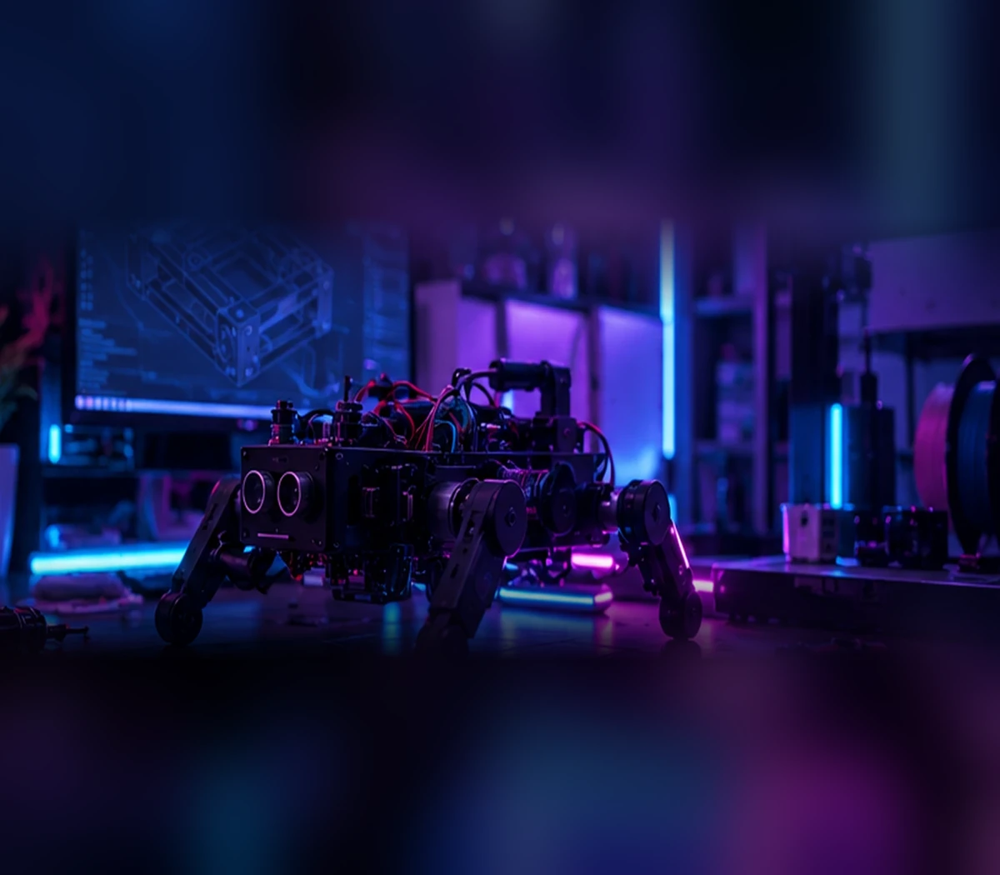

Mechanical design
CAD assemblies, motion, interfaces and designing parts for the way they'll really be made.
Hi, I'm Matthias Paterson-Hawes — a second-year Mechanical Engineering student at the University of Auckland. I like taking ideas out of CAD and turning them into things you can actually hold, test and improve.

For me, engineering gets interesting when the model meets the real world.
I'm drawn to the details that make a design actually work: fit and tolerances, material behaviour, wiring, power, manufacturing and the hundred small decisions between an idea and a reliable prototype.The hands-on part of engineering is where I learn the most.
CAD assemblies, motion, interfaces and designing parts for the way they'll really be made.
Rapid iteration, print orientation, tolerances, material selection and physical testing.
Microcontrollers, sensors, actuators and software integrated into moving systems.